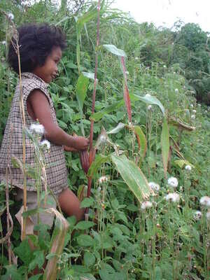

abat 
/ʔabat/
v_rt.
“pick”
vt.
for someone (eg-abat, mig-abat/in-abat, agent, eg><ø-) to break off something, e.g., corn (aheley), sugarcane (tirè), a raft pole (tarek) (eg-abaten, in-abat/mig-abat/pig-abat, abaten, patient, eg><en-) and remove the outer skin or leaves
Ka eg-abat iyan sika se eggaaniyen ne aheley.Kenè egkaayun seini te paley su aheley rè iya.
Cult. When corn (aheley) is picked, the skin (luwit) is then removed at the same time. If the corn is only picked, but not husked, then this is not called eg-abat but egsagpì. With sugarcane (tirè), the outer leaves are usually pulled off before the sugar cane is broken off at the base. With a raft pole (tarek), the nodes (buku) are usually smoothed off.
cf. sagpì
Eg-abat a te aheley su eggaseen ku.
I am going to pick corn because I'm going to grate it.
Eg-abaten niyud e ka aheley ni Nanit?
Are you going to pick Nanit's corn?
Egdaruwen nud ka in-abatan gabii?
Did you plow the harvested corn field yesterday?
Eng. break off; snap off; pick; harvest; husk
Ceb. sangit
OCM: Annual Cycle (221)
Online dict status: -
Usage level: M
Updated by: RJH,JLM,AAA,RJH,NJK,RJH,QDL,RAA,QDL,RJH
Last updated: 10/Mar/2014
This page last updated: 03-Jan-2020
Copyright © 2009-2014, Matigsalug Language Christian Association, Inc